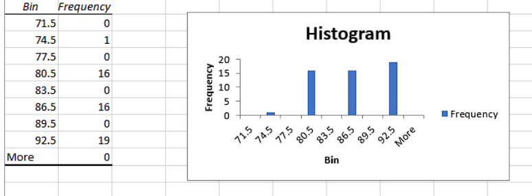

The qualitative data we wanted to ask from them were their final grades last year and how much time they usually spend on the Internet (in hours).
Grades Last YearPisay's grading system is 1.00 to 5.00, with 1.00 being the highest, and 5.00 being the lowest. But here, we converted it to 1.00 = 100 and 5.00 = 0 so that will be easier to understand. And here, it looks like the highest class interval is 92.5 (or 90-92), which means most people got a high grade last school year. |
Time Spent on the InternetFor the hours used, looks like the highest class interval is 8.5, which means that teenagers usually spend 8-9 hours on the internet daily. |